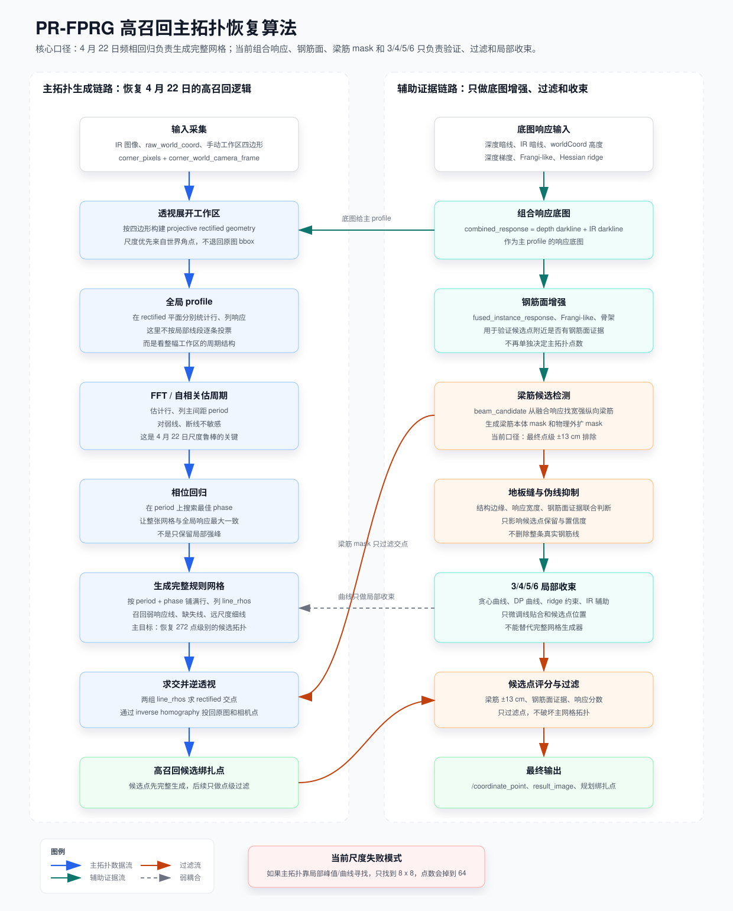

{kind=link}
{kind=link}
1. 输入和几何
输入保持现有三件套：IR 图、raw_world_coord、手动工作区四边形。四边形透视展开后，rectified 尺度优先使用世界角点，避免回到原图 bbox。
corner_pixels corner_world_camera_frame rectified geometry本报告把 2026-04-22 在当前尺度下表现较好的频相回归网格方案，重新整理为下一版主视觉链路： 用完整网格回归负责召回，用组合响应、钢筋面、梁筋 mask 和曲线方案负责验证、过滤与局部收束。
当前尺度下的召回问题，不应该继续靠 3/4/5/6 曲线方案硬补。 主拓扑应恢复为 4 月 22 日的「FFT / 自相关估周期 + 相位回归 + 完整网格生成」。 当前组合响应、钢筋面分割和梁筋候选仍然保留，但只作为底图增强、点级过滤和局部微调。

输入保持现有三件套：IR 图、raw_world_coord、手动工作区四边形。四边形透视展开后，rectified 尺度优先使用世界角点，避免回到原图 bbox。
corner_pixels corner_world_camera_frame rectified geometry底图使用当前效果较好的组合响应：深度暗线为主，IR 暗线为辅。Frangi-like、深度梯度和 worldCoord 高度继续用于钢筋面增强。
combined_response fused_instance_response completed_surface_response对 rectified 行、列 profile 做 FFT / 自相关估周期，再做相位回归，按 period + phase 铺满整张规则网格。这一步负责高召回。
period phase full lattice梁筋只在最终点级过滤，当前口径为 ±13 cm；3/4/5/6 曲线算法只对候选线做局部贴合，不负责决定主拓扑数量。
beam_candidate ±13 cm curve refine| 项目 | 4 月 22 日频相回归 | 当前多响应 / 3/4/5/6 | 下一版取法 |
|---|---|---|---|
| 主线生成 | 全局 period + phase 生成完整网格 | 依赖局部峰值、曲线或钢筋面证据 | 恢复 4 月 22 日作为主拓扑 |
| 弱线召回 | 可以按周期补出弱线和断线 | 弱线容易在 peak support / spacing / ridge 阶段丢掉 | 先完整召回，再靠证据评分 |
| 梁筋处理 | 旧版处理较弱，容易把梁筋附近也补成候选点 | 已有 beam_candidate 和 ±13 cm 点级过滤 | 保留当前梁筋过滤层 |
| 曲线钢筋 | 主网格偏规则，曲线贴合不足 | 3/4/5/6 能做局部曲线收束，但不能保证召回 | 主网格先召回，曲线只收束 |
| 当前尺度表现 | 历史基准记录为 272 点 | 最近实验为 64 点，线族约 8 x 8 | 以 272 点级别候选作为召回目标 |
下一步不是把旧代码原样回滚，而是把 4 月 22 日的频相回归作为「候选拓扑生成器」接回当前主链：
| 阶段 | 实现目标 | 保留现有能力 |
|---|---|---|
| 阶段 A | 恢复 FFT / 自相关 period + phase 生成完整行列网格 | 继续使用组合响应作为底图 |
| 阶段 B | 把完整候选交点交给梁筋 ±13 cm 点级过滤 | 保留 beam_candidate 和高伽马报告展示 |
| 阶段 C | 用钢筋面、Frangi-like、ridge 给候选点打分 | 保留 completed_surface_response |
| 阶段 D | 3/4/5/6 对候选线局部收束，不再负责主召回 | 保留曲线报告作为对照 |
本报告是算法流程设计报告，当前视觉实验图仍在下面两个页面查看：